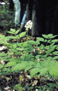
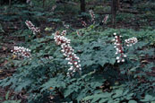
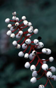

Actaea Pachypoda
Family: Ranunculaceae
White Baneberry (Doll's Eye)
Swink/Wilhelm #7


Click to view larger photo
FLOWERING: May to early June.
SEED TIMING: September.
HABITAT: Rich woodlands.
DIAGNOSTIC FEATURES: Up to 30 inches tall. One of the larger early spring flowering plants. A thick, erect stem, branched near the top, bears large compound, toothed leaves. Oblong racemes of small, feathery flowers on thick pedicels form at the tip of the stem.
TO PICK: Most conspicuous for its ivory white berries, each with a black dot (doll’s eye) on thick red stalks. Strip berries or take entire head. Berries are poisonous.